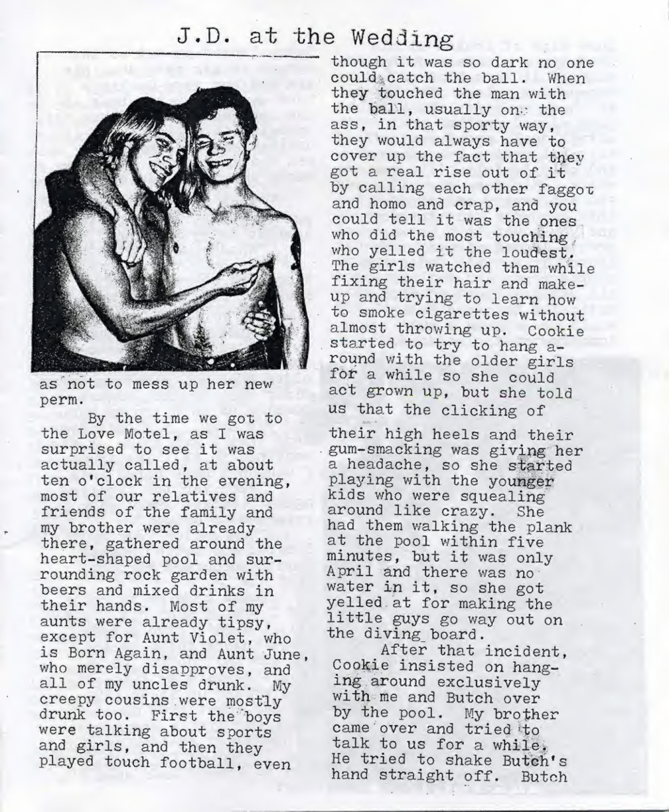
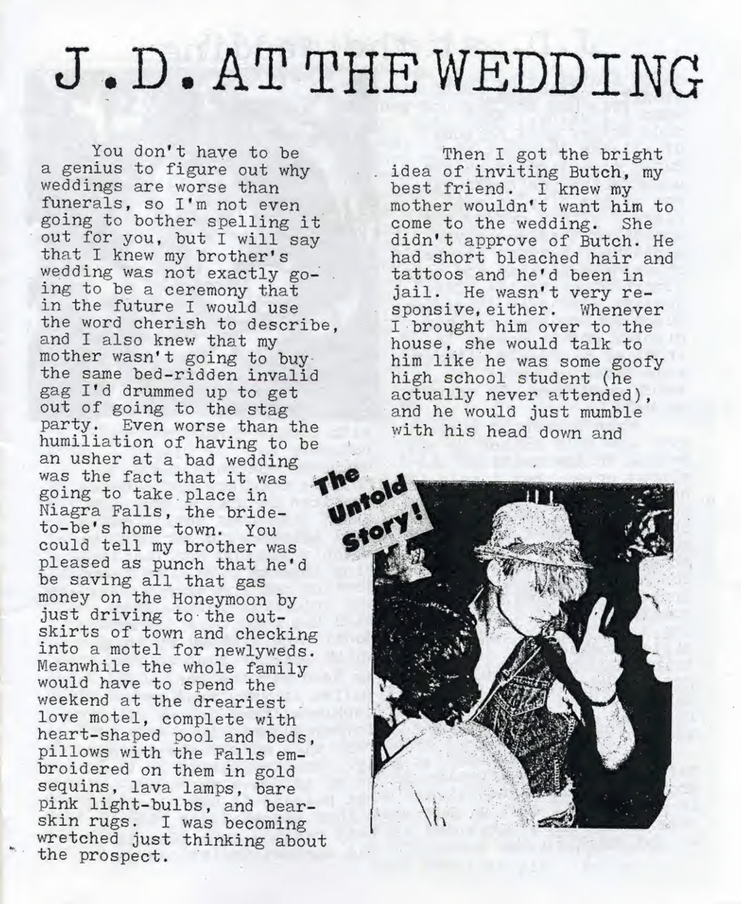
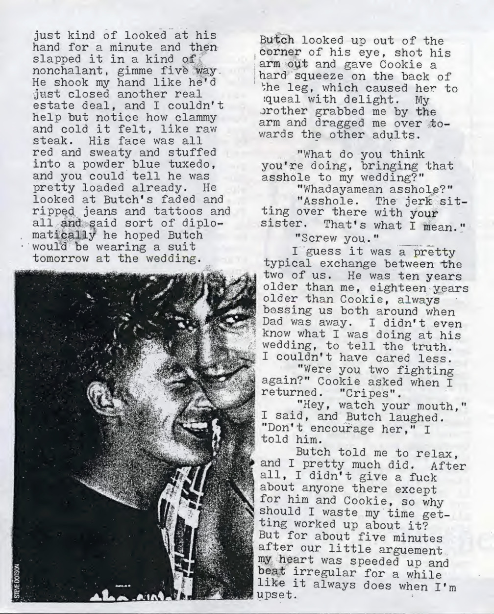
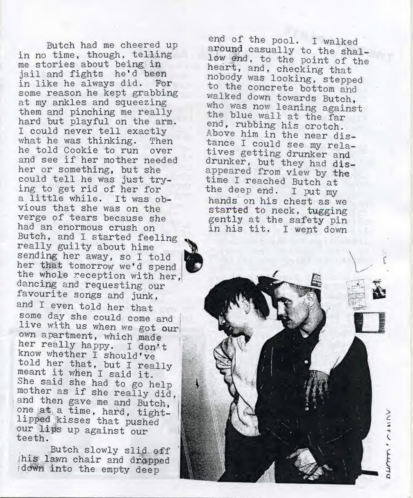

@@include('../../html_header.html', { "title": "«J.D. at the wedding»" }) @@include('../../sidebar.html')




«J.D. at the wedding» est extrait du premier numéro de «J.D.s», fanzine queer-punk dirigé par Bruce LaBruce et J.B. Jones entre 1985 et 1991.
Télécharger le document complet
@@include('../../footer.html')